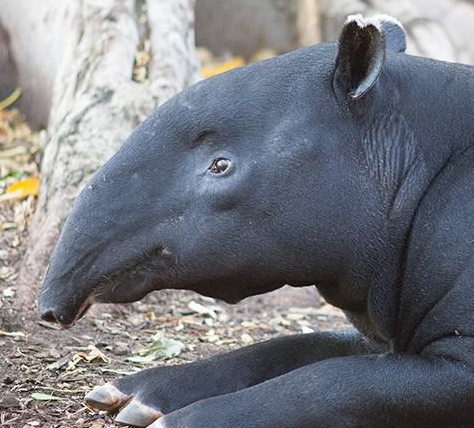
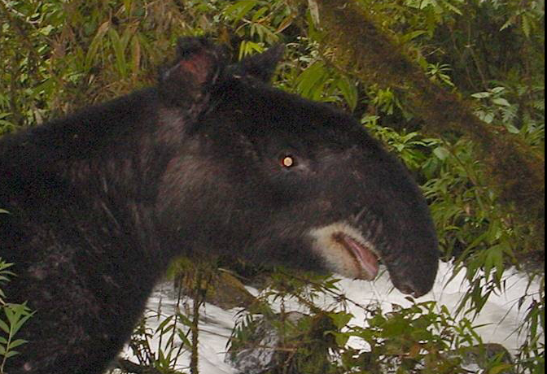

They have a unique prehensile nose, which they
use to grasp food, leaves, and branches, and
can move it in different directions.
Tapirs communicate with each other through a series of sounds, including chirps, grunts, and whistles.
Baby tapirs are born with a coat of stripes and spots, which helps them blend in with their environment and
avoid predators. The coat will gradually disappear as they grow older.
TAPIR SPECIES
TAPIR 1

TAPIR 1
TAPIR 1

TAPIR 1
"The tapir is a symbol of the disappearing wilderness, representing the need to protect and
preserve the natural world for future generations." - Michael F. McBride
Tapirs are an important and fascinating species that play a vital role in maintaining healthy ecosystems.
However, they are facing threats from habitat loss, hunting, and poaching. We have the power to help protect
tapirs and ensure their survival for future generations.